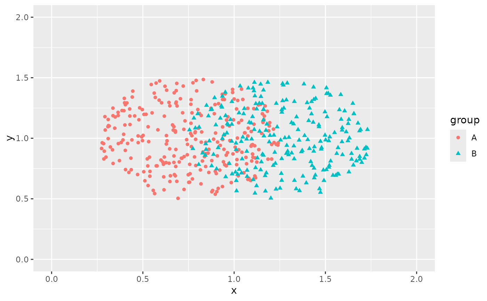

Jitter points on an ellipse and dodge groups side-to-side
position_jitterdodge_ellipse.RdThis function dodges groups of points side-to-side and adds elliptical random noise to perfectly over-plotted points. See the position_jitter_ellipse() documentation for more information.
Usage
position_jitterdodge_ellipse(
jitter.width = NULL,
jitter.height = NULL,
dodge.width = 1,
seed = NA
)See also
Other Functions:
position_circlepack(),
position_circlepackdodge(),
position_jitter_ellipse(),
position_sunflower(),
position_sunflowerdodge(),
sunflower()
Examples
library(ggplot2)
dat <- data.frame(x = rep(1, 500), y = rep(1, 500),
group = sample(LETTERS[1:2], 500, replace = TRUE))
ggplot(dat, aes(x, y, shape = group, color = group)) +
geom_point(position = position_jitterdodge_ellipse(jitter.width = 0.5,
jitter.height = 0.5,
dodge.width = 1)) +
coord_cartesian(xlim = c(0, 2), ylim = c(0, 2))
